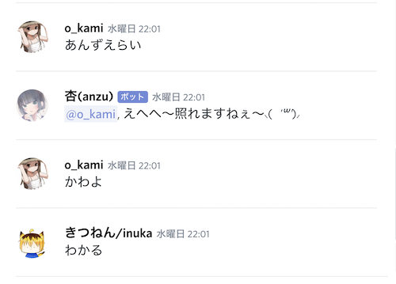

2019/10/23 anzu Ver.0.0.0.1 Pre-Alpha 杏(anzu)生誕
discord.jsにて実装。挨拶など単純なやり取りが可能。「杏(anzu)」ちゃん起動した〜良き良き。
— ゆーとりぷしん (@yutrypsin) October 22, 2019
キャラ設定共に暇な時に出来ること増やしていこう pic.twitter.com/DSEjWESFvI
019/10/23 anzu Ver.0.0.0.1 Pre-Alpha Madagascar クライアント用意
いずれ作り込む為にBotの容れ物アカウントを作成
用途としては、唯一継続プレイしているソシャゲである「シノアリス」のギルド運営補助Botとして開発する予定
2019/10/23 anzu Ver.0.1.0.2 Pre-Alpha 自分の名前を呼ばれると反応
メッセージ内に文字列として杏の名前があると反応。ある程度の表記揺れにも対応。

2019/10/24 anzu Ver.0.2.0.3 Pre-Alpha ジャルジャルのピンポンパンゲームモードを追加
2019/10/25 anzu Ver.0.3.0.4 Pre-Alpha 「(任意のゲーム)をプレイ中」のステータス表示を追加
2019/10/26 anzu Ver.0.3.1.5 Pre-Alpha 自分へのメンションを認識

2019/10/28 anzu Ver.1.0.0.6 Alpha glitchへお引越し
これによりmacbookのオンライン状況に関わらず起動が可能に。
但ししばらく無操作でいると落ちる
杏ちゃんは小悪魔なのでデーモン化しようと思ったりもしたんですがよく分かんなかったので断念
— ゆーとりぷしん (@yutrypsin) October 28, 2019
先程昼休みにMacBookのローカル環境からglitchにお引越ししました〜
まだ常時起動までは実装されてないけどMacBookのオンライン状況関係なく動作できる様にはなりましたとさ〜
2019/10/28 スanzu Ver.1.0.1.7 Alpha テータス表示のバリエーション追加
「 〇〇 をプレイ中」「 〇〇 を視聴中」「 〇〇 を再生中」を選択可能に
(「 〇〇 を配信中」は上手く行かず)

この機能の制御はソースコード内で行う
2019/10/28 anzu Ver.1.0.2.8 Alpha ピンパンパンゲームを別モードとして実装
ピンポンパンゲーム中以外は「ピン」や「ピンポンパン」などのゲームルール内の語彙に反応しない
2019/10/28 anzu Ver.1.0.3.9 Alpha デバック用に変数表示返答コマンドの追加
新しい変数を表示するには手動でメッセージ内容を表示する必要あり
2019/10/28 anzu Ver.1.1.0.10 Alpha メンション付きでモーニングコールの追加
個別に手作業でID拾って来て書いている。喋りかけないといけないので実用性無し
対応パターンはドルフィンズメンバーのみ

(遅刻時に「ごめん。授業には間に合いません。今シンガポールに...」の定型文を使い始めたことからの身内ネタ)
2019/10/29 anzu Ver.1.2.0.11 Alpha 時刻や日付を教えてくれるコマンドの追加
杏に時刻表示させたら-9時間の時差有ったんだけどglitchのサーバーあるのってイギリス辺りなんかな pic.twitter.com/oVyUzb1UDr
— ゆーとりぷしん (@yutrypsin) October 29, 2019
#discordanzu
— ゆーとりぷしん (@yutrypsin) October 29, 2019
あのままだと0〜9時までを24〜32時と表現する事になるのでその時間帯の表記が正しくなるように修正。
ついでにTwitterへのメモにタグを付けることで後で見返しやすいように pic.twitter.com/oyNidzSJ1q
2019/10/30 anzu Ver.2.0.0.12 Alpha 常時起動を実装
GAS(google apps script)でbotのglitchを触る関数を作成
スケジューラーを用いて毎分実行することで自動スリープを延期
これによって完全にオンライン上での開発及び運用体制が構築
参考Qiita→リンク
#discordanzu
— ゆーとりぷしん (@yutrypsin) October 30, 2019
GASがエラー吐かなくなったので多分常時起動出来るようになりました
参考Qiitahttps://t.co/efaJ0GpaUf
2019/10/30 anzu Ver.2.0.1.13 Alpha 名前付きで褒められると喜ぶ様に調整

2019/10/31 anzu Ver.2.0.2.14 Alpha 他のBOTに反応できる様に調整
2019/10/31 anzu Ver.2.0.3.15 Alpha ソースコードの整理
2019/10/31 キャラ設定の微修正。裏杏を別キャラ扱いに
2019/10/31 バグ修正
朝起きたら杏(anzu)が落ちていた
原因究明が出来なかったが、botのトークンをリジェネレートかつグリッチを新規プロジェクトに移植したら治った。
その後は安定して動作している。
2019/11/01 anzu Ver.2.1.3.16 Alpha 乱数生成コマンドの試作
2019/11/01 anzu Ver.2.1.4.17 Alpha ダイス投げコマンドへの転用

乱数生成コマンドの
2019/11/01 anzu Ver.2.1.5.18 Alpha 返答パターンの追加
「What time is it now?」,「Hey」
2019/11/03 anzu Ver.2.1.6.19 Alpha 返答パターンの追加(複数パターンからのランダム返答も実装)
2019/11/03 コーディング中にanzuが落ちた。
何処かの記事で「botが50回再起動するとdiscord側から強制的にトークンを変更される」と言う記述を見た覚えがあったので、Discord Developer Portalからトークンを取り直したところ即復帰した。
glitchの仕様上、書き換え時に即再起動する為、この障害とは付き合っていく必要がある。
その分即座に反映されると言う点や、トークンが書き変わるのはコーディング中(anzuに手をかけている時)と言う点は有難い。
追記：discordから「あなたのボット杏(anzu)が短期間に1000回以上discordに接続したようです。このような動作は通常、バグである為、あなたのボットのトークンをリセットしました。」というメールが来てました。
2019/11/04 anzu Ver.2.1.7.20 Alpha 時差計算の微修正、及び返答パターンの追加
・グリニッジ標準時から時差を足して日本時間を取得する際の処理の追加
グリニッジ標準時が15時〜24時(日本時間翌日の0時〜9時)において
旧関数-「日付」「時間」のみを変更
新関数-「日付」「時間」「曜日」を変更かつ、「32日」もしくは「2月31日」「4月31日」「6月31日」「9月31日」「11月31日」、もしくは閏年以外の「2月30日」において「月」「日付」をさらに変更
・返答パターンの追加「曜日」
2019/11/04 anzu Ver.2.1.8.21 Alpha 時間取得関数の定期化
旧関数-起動時、及び必要時(時間や日付などを聞かれた)に取得
新関数-起動時から1/10s間隔で更新
2019/11/04 anzu Ver.2.1.9.22 Alpha ダイス投げコマンドの更新
ダイスの面数指定がうまく動かなかった為暫定的に100面,10面,6面のみ実装。
「[ダイスを投げる回数(1〜9999)]D[ダイスの面の数(100 or 10 or 6)]」のダイスコードを使用
2019/11/06 anzu Ver.2.1.10.23 Alpha ダイス投げ時に判定値を再実装
これにて一旦収集。ダイス関連機能についてはしばらく弄らない。
2019/11/10 anzu Ver.2.1.11.24 Alpha ダイス投げコマンド微修正
話の最中に投げてしますのを防ぐ為、「」の中にあるダイスコードのみに反応するように調整
2019/11/10 ギシアン時報Bot Ver.1.0.0.1 Pre-Alpha 試作
シノアリスでのコロシアム(毎日あるギルド対抗戦)の時報BOT
うちのギルドは22時帯なので毎日21:57にギシアン(ゲーム内案内人キャラ)が通知してくれる
discord.jsで特定の時間に発言させることが今の技量では無理な為、その開発糸口として試作
discordのwebhookとGoogle Apps Scriptを利用している。
webhook用の新規botを作成するのが一番手軽な為、Madagascarとは別に作成した。
この時報Botを起点にGASと仲良くなっていきたい。
2019/11/21 桃(momo) Ver.0.0.0.1 Pre-Alpha ロールアウト
杏(anzu)の妹。
杏(anzu)はdiscord.jsベースで実装しているが、discord.pyにも手を出したくなった為用意したbot。
アカウント及びトークン関連は裏杏(uraanzu)の流用。
2019/11/27 anzu Ver.2.1.12.25 Alpha 個人的便利機能追加
大学の工房利用時、機材の加工可能なスペックデータが欲しくなることがありますが、ページのリンク推移がわかりにくく検索から目的のページにたどり着くまで時間を要する為、直接教えてくれるようにした。
https://oip.kyoto-art.ac.jp/equipment/
そういや、個人的にウルトラファクトリーのHPのリンク推移はクソだと思ってて、毎回目的の機材の仕様に辿り着くまで苦労するので杏が機材リストURLを直接投げてくれるようにしました。
— ゆーとりぷしん (@yutrypsin) November 27, 2019
地味に便利。 pic.twitter.com/O3DEHl8SbX
2019/12/05 anzu Ver.2.1.13.26 Alpha 人狼機能追加の為の下準備
役職のデータを作成
2019/12/06 桃(momo) ボイスチャンネル関連機能の開発
授業で「インタラクティブな成果物」を目指してコーディングをせよという課題が与えられた。
兼ねてよりボイスチャットも活用したかったので、その取っ掛かりとして「ボイスチャットに参加しているユーザーの発言から、そのユーザーのいるボイスチャンネルに任意の音源を流す」機能を開発する時間とした。
そのテスト環境として、影響の少ない桃(momo)を開発と検証を桃と一緒に行った。(anzuは人が多い鯖にも参加している為)
得られた成果としては「botが参加している鯖でのボイスチャンネルの人の出入り」「自分に指示を送ったユーザーが参加しているボイスチャンネルに自分も入る」機能が開発できた。
逆に、「参加しているチャンネルに音声を流す」事は時間内には叶わなかった。 2019/12/13 anzu Ver.2.1.14.27 Alpha 個人的便利機能追加
コースで使うことができる3Dプリンターの使い方を纏めてあるページを投げてくれる機能の追加。
https://kuad-xtechdesign.github.io/how2page/how2use/cr10.html
2019/12/17 anzu Ver.2.1.15.28 Alpha 返答パターンの追加
「色違い」
2019/12/17 anzu Ver.2.2.0.29 Alpha ボイスチャンネルでの機能
2019/12/06の成果を杏にも移植。自分が参加している鯖のボイスチャンネルの人の出入りを認知できるようになった。